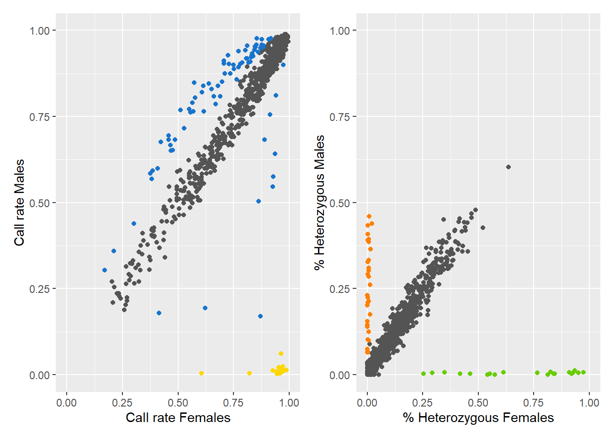
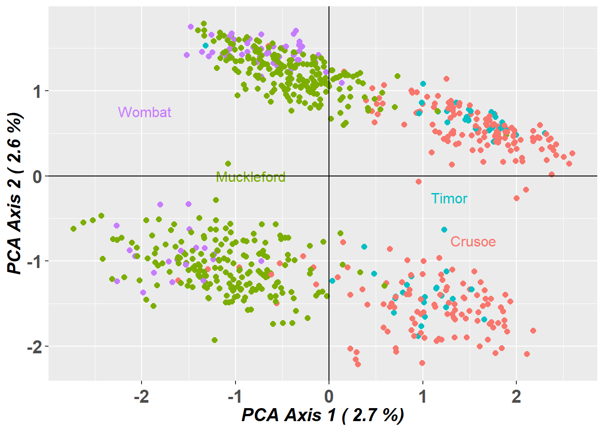
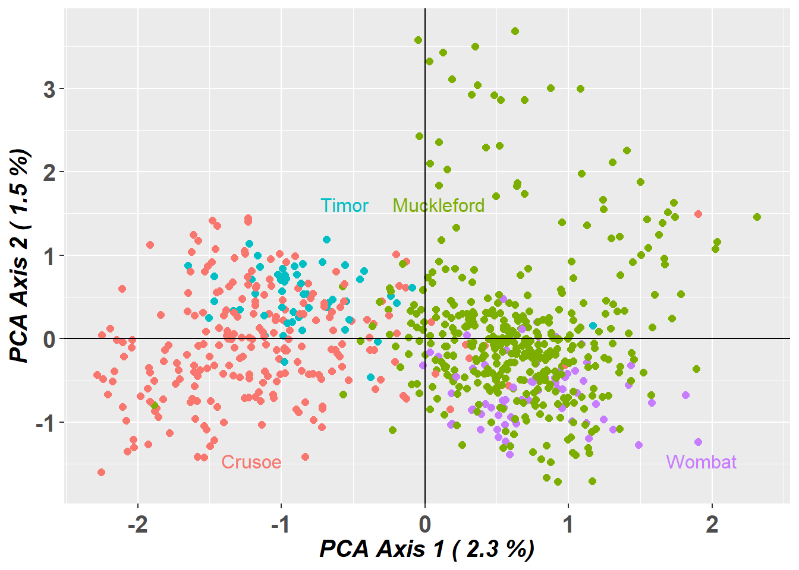

library(dartRverse)
library(dartR.sexlinked)8 Bonus! Sex Linked Markers
Session Presenters
Required packages
Session overview
In this tutorial you will read about sex-linked loci and do two excercises.
- Introduction
- Exercises
- Exercise 1: Identifying sex-linked loci and using them for sexing
- Exercise 2: Observing the effects of not removing sex-linked loci on population genetic analyses
- 2.1. Differences in PCoA
- 2.2. Differences in genetic diversity and fixation indices
- References
Introduction
Many population genetic studies assume autosomal loci. Therefore, it is best practice to exclude sex-linked loci from SNP datasets. Failing to remove these loci can lead to skewed estimates of genetic diversity—such as heterozygosity, fixation indices (like FIS), polymorphism, and allelic richness—especially when the sample has an uneven sex ratio or when there are differences in diversity between sex chromosomes and autosomes. Identifying population structure also improves when sex-linked loci are excluded, since these markers can obscure patterns shaped by evolutionary forces like gene flow, selection, and drift. Similarly, parentage analyses, which rely on autosomal Mendelian inheritance, can be compromised by sex-linked loci, leading to apparent mismatches between true parent-offspring pairs. Therefore, accurately identifying sex-linked loci is essential for reliable genetic analysis and informed management decisions.
On the other hand, identifying sex-linked markers can be valuable for determining the sex of individuals in species without sexual dimorphism, and for uncovering sex-specific ecological or evolutionary patterns.
Sex-linked markers are those that are inherited differently between the sexes, usually because they are present in sex chromosomes. In animal species, the two most common chromosomal sex-determination systems are ZW and XY. In the ZW system, typical for birds and some reptiles and insects, females are heterogametic (ZW) and males are homogametic (ZZ). On the contrary, in an XY system, typical for mammals and some insects, males are the heterogametic sex with one X and one Y chromosome, and females are the homogametic sex with two X chromosomes.
Sex-linked markers can be classified into three types (Figure 1):
- W-linked or Y-linked loci
- Z-linked or X-linked loci
- Gametologs

Exercise Data
The following exercises can be done with the dataset included in the dartR.sexlinked package (that of the beautiful Eastern Yellow Robin, EYR; Figure 2; Robledo-Ruiz et al. 2023) or on your own data!

Exercise 1: Identify sex-linked loci and use them for sexing

Imagine you have a genetic dataset in which you have the sexes of most individuals but not all. You are also not sure about the sexes you have recorded for some individuals during fieldwork (human error exists!). Because you know a lot about sex-linked loci, you want to see if you can identify some in order to help you double-check sexes.
Load data
Start by calling the dataset and exploring it.
data("EYR")
EYR # Explore the dataset ********************
*** DARTR OBJECT ***
********************
** 782 genotypes, 1,000 SNPs , size: 20.2 Mb
missing data: 147031 (=18.8 %) scored as NA
** Genetic data
@gen: list of 782 SNPbin
@ploidy: ploidy of each individual (range: 2-2)
** Additional data
@ind.names: 782 individual labels
@loc.names: 1000 locus labels
@loc.all: 1000 allele labels
@position: integer storing positions of the SNPs [within 69 base sequence]
@pop: population of each individual (group size range: 52-421)
@other: a list containing: loc.metrics, ind.metrics, loc.metrics.flags, verbose, history
@other$ind.metrics: id, pop, sex, Mito, service, plate_location
@other$loc.metrics: AlleleID, CloneID, AlleleSequence, TrimmedSequence, Chrom_Yellow_robin_HiC_v2, ChromPos_Yellow_robin_HiC_v2, AlnCnt_Yellow_robin_HiC_v2, AlnEvalue_Yellow_robin_HiC_v2, SNP, SnpPosition, CallRate, OneRatioRef, OneRatioSnp, FreqHomRef, FreqHomSnp, FreqHets, PICRef, PICSnp, AvgPIC, AvgCountRef, AvgCountSnp, RepAvg, clone, uid, rdepth, maf
@other$latlon[g]: no coordinates attachedEYR@n.loc # Number of SNPs[1] 1000length(EYR@ind.names) # Number of individuals[1] 782Search for sex-linked loci
The function gl.report.sexlinked identifies sex-linked and autosomal loci present in a SNP dataset (genlight object) using individuals with known sex. It identifies five types of loci: w-linked or y-linked, sex-biased, z-linked or x-linked, gametologous and autosomal.
Tip
The genlight object must contain in gl@other$ind.metrics a column named id, and a column named sex in which individuals with known-sex are assigned M for male, or F for female. The function ignores individuals that are assigned anything else or nothing at all (unknown-sex).
Check that ind.metrics has the necessary columns:
knitr::kable(EYR@other$ind.metrics[1:10,])| id | pop | sex | Mito | service | plate_location | |
|---|---|---|---|---|---|---|
| 024-96401 | 024-96401 | Crusoe | M | B | DYro17-3039 | 2-D9 |
| 024-96401b | 024-96401b | Crusoe | M | B | DYro21-6107 | 3-D3 |
| 024-96402 | 024-96402 | Crusoe | F | A | DYro17-3039 | 2-C9 |
| 024-96403 | 024-96403 | Crusoe | M | B | DYro17-3039 | 2-B9 |
| 024-96404 | 024-96404 | Crusoe | M | A | DYro17-3039 | 2-A9 |
| 024-96405 | 024-96405 | Muckleford | M | A | DYro17-3039 | 2-D6 |
| 024-96406 | 024-96406 | Crusoe | F | A | DYro17-3039 | 2-H8 |
| 024-96407 | 024-96407 | Crusoe | F | A | DYro17-3039 | 2-G8 |
| 024-96408 | 024-96408 | Crusoe | M | A | DYro17-3039 | 2-F8 |
| 024-96410 | 024-96410 | Muckleford | M | A | DYro17-3039 | 1-E9 |
only showing first 10 rows
Run the function to identify sex-linked loci in the EYR genlight object:
out <- gl.report.sexlinked(EYR, system = "zw")Starting gl.report.sexlinked
Processing genlight object with SNP dataDetected 352 females and 429 males.Starting phase 1. May take a while...Building call rate plot.Done building call rate plot.Starting phase 2. May take a while...Building heterozygosity plot.Done building heterozygosity plot.**FINISHED** Total of analyzed loci: 1000.
Found 150 sex-linked loci:
16 W-linked loci (yellow)
82 sex-biased loci (blue)
32 Z-linked loci (orange)
20 gametologs (green).
And 850 autosomal loci (grey).
Completed: gl.report.sexlinked
Question time
Question: How many males and females does the dataset contain?
Question: How many sex-linked loci were found?
Question: Why are there two plots?
Question: What does each point in the plots represent?
Question: What do the colours in the plots mean? Look at Figure 1 for a hint. What about the blue dots?
Sexing individuals with unknown sex
The dartR.sexlinked package has more functions that can be useful when a dataset has some missing sex data.
Question time
Question: How many individuals does the EYR genlight object contain?
Question: How many males and females were detected by function gl.report.sexlinked? Are there individuals with unknown sex?
Find the id of the individual that is not sexed:
EYR@other$ind.metrics[!(EYR@other$ind.metrics$sex %in% c("M", "F")), ] id pop sex Mito service plate_location
024-96417 024-96417 Muckleford B DYro17-3039 2-E5Use the sex-linked loci you have identified to infer the sex of that individual by running function infer.sex.
This function uses the output of function gl.keep.sexlinked to infer the sex of all individuals in the dataset. It uses 3 types of sex-linked loci (W-/Y-linked, Z-/X-linked, and gametologs), assigns a preliminary genetic sex for each type of sex-linked loci available, and outputs an agreed sex:
EYR_sexLinked <- gl.keep.sexlinked(EYR, system = "zw") # save sex-linked lociStarting gl.keep.sexlinked
Processing genlight object with SNP dataDetected 352 females and 429 males.Starting phase 1. May take a while...Building call rate plots.Starting phase 2. May take a while...Building heterozygosity plots.Done building heterozygosity plots.**FINISHED** Total of analyzed loci: 1000.
Kept 150 sex-linked loci:
16 W-linked loci (yellow)
82 sex-biased loci (blue)
32 Z-linked loci (orange)
20 gametologs (green).
And removed 850 autosomal loci (grey).Completed: gl.keep.sexlinked inferred.sexes <- gl.infer.sex(gl_sexlinked = EYR_sexLinked,
system = "zw", seed = 124) # use sex-linked loci***FINISHED***The function outputs a table with assigned sexes based on sex-linked loci:
head(inferred.sexes, 10) id w.linked.sex #called #missing z.linked.sex #Het.z #Hom.z
024-96401 024-96401 M 0 16 M 7 25
024-96401b 024-96401b M 0 16 M 9 21
024-96402 024-96402 F 15 1 F 0 32
024-96403 024-96403 M 1 15 M 11 21
024-96404 024-96404 M 0 16 M 12 20
024-96405 024-96405 M 0 16 M 11 21
024-96406 024-96406 F 15 1 F 0 30
024-96407 024-96407 F 15 1 F 0 28
024-96408 024-96408 M 0 16 F 4 28
024-96410 024-96410 M 0 16 M 7 25
gametolog.sex #Het.g #Hom.g agreed.sex
024-96401 M 0 5 M
024-96401b M 0 5 M
024-96402 F 5 0 F
024-96403 M 0 5 M
024-96404 M 0 5 M
024-96405 M 0 5 M
024-96406 F 5 0 F
024-96407 F 5 0 F
024-96408 M 0 5 *M
024-96410 M 0 5 MExamine the output table. There are four assigned sexes per individual: one according to w-linked loci, one according to z-linked loci, one according to gametologs, and one final agreed sex.
Question time
Question: What agreed sex was assigned to the individual with missing sex?
Question: Can you find individuals for which the agreed sex is uncertain (i.e., has an asterisk ‘*’)? How would you decide which is their correct sex?
Exercise 2: Observe the effects of not removing sex-linked loci on population genetic analyses

Imagine you are analyzing the genetic data of a species and you want to look at its population structure and genetic diversity. You start by filtering your beautiful set of SNPs. Because you are a rigorous scientist, you want to test whether using function gl.drop.sexlinked to properly filter out sex-linked loci changes the results of the populations analyses. So you: (1) process your SNP dataset by applying only standard filters (from here on “sloppy filtering”) and run analyses, and (2) process the dataset by filtering out sex-linked loci first, applying standard filters second (from here on “correct filtering”), and then run analyses.
Use the EYR dataset or your own data to report:
Do you see any changes in a population structure analysis (PCoA) when you filter out sex-linked markers versus when you do not?
Do you see any differences in genetic diversity and fixation indices when you filter out sex-linked markers versus when you do not?
Standard filtering
Filtering SNPs only with standard filters (“sloppy filtering”)
Let’s apply only standard filters (read depth, call rate, and MAC):
# Filter for read depth
gl.report.rdepth(EYR)Starting gl.report.rdepth
Processing genlight object with SNP data
Reporting Read Depth by Locus
No. of loci = 1000
No. of individuals = 782
Minimum : 2.6
1st quartile : 4.3
Median : 5.6
Mean : 5.9649
3r quartile : 7.325
Maximum : 13.2
Missing Rate Overall: 0.19 Quantile Threshold Retained Percent Filtered Percent
1 100% 13.2 1 0.1 999 99.9
2 95% 9.9 51 5.1 949 94.9
3 90% 9.0 105 10.5 895 89.5
4 85% 8.3 151 15.1 849 84.9
5 80% 7.8 208 20.8 792 79.2
6 75% 7.3 258 25.8 742 74.2
7 70% 6.9 304 30.4 696 69.6
8 65% 6.5 354 35.4 646 64.6
9 60% 6.2 404 40.4 596 59.6
10 55% 5.9 451 45.1 549 54.9
11 50% 5.6 504 50.4 496 49.6
12 45% 5.3 563 56.3 437 43.7
13 40% 5.1 602 60.2 398 39.8
14 35% 4.8 659 65.9 341 34.1
15 30% 4.6 702 70.2 298 29.8
16 25% 4.3 752 75.2 248 24.8
17 20% 4.0 823 82.3 177 17.7
18 15% 3.9 852 85.2 148 14.8
19 10% 3.6 906 90.6 94 9.4
20 5% 3.3 956 95.6 44 4.4
21 0% 2.6 1000 100.0 0 0.0
Completed: gl.report.rdepth EYR.sloppy <- gl.filter.rdepth(EYR, lower = 3, upper = 11, verbose = 0)# Filter for loci call rate
gl.report.callrate(EYR.sloppy, method = "loc")Starting gl.report.callrate
Processing genlight object with SNP data
Reporting Call Rate by Locus
No. of loci = 958
No. of individuals = 782
Minimum : 0.20844
1st quartile : 0.7202688
Median : 0.895141
Mean : 0.8131871
3r quartile : 0.950128
Maximum : 0.988491
Missing Rate Overall: 0.1868
Quantile Threshold Retained Percent Filtered Percent
1 100% 0.988491 1 0.1 957 99.9
2 95% 0.979540 52 5.4 906 94.6
3 90% 0.973146 104 10.9 854 89.1
4 85% 0.965473 145 15.1 813 84.9
5 80% 0.956522 197 20.6 761 79.4
6 75% 0.950128 247 25.8 711 74.2
7 70% 0.943734 291 30.4 667 69.6
8 65% 0.932225 339 35.4 619 64.6
9 60% 0.921995 386 40.3 572 59.7
10 55% 0.910486 434 45.3 524 54.7
11 50% 0.895141 482 50.3 476 49.7
12 45% 0.872123 527 55.0 431 45.0
13 40% 0.847826 575 60.0 383 40.0
14 35% 0.819693 623 65.0 335 35.0
15 30% 0.780051 671 70.0 287 30.0
16 25% 0.719949 719 75.1 239 24.9
17 20% 0.662404 768 80.2 190 19.8
18 15% 0.594629 815 85.1 143 14.9
19 10% 0.523018 863 90.1 95 9.9
20 5% 0.402813 911 95.1 47 4.9
21 0% 0.208440 958 100.0 0 0.0Completed: gl.report.callrate EYR.sloppy <- gl.filter.callrate(EYR.sloppy, method = "loc", threshold = 0.75, verbose = 0, recalc = TRUE)
# Filter for individual call rate
gl.report.callrate(EYR.sloppy, method = "ind")Starting gl.report.callrate
Processing genlight object with SNP data
Reporting Call Rate by Individual
No. of loci = 703
No. of individuals = 782
Minimum : 0.03556188
1st quartile : 0.9174964
Median : 0.9416785
Mean : 0.9108097
3r quartile : 0.9573257
Maximum : 0.9829303
Missing Rate Overall: 0.0892
Listing 4 populations and their average CallRates
Monitor again after filtering
Population CallRate N
1 Crusoe 0.9027 238
2 Muckleford 0.9073 421
3 Timor 0.9402 52
4 Wombat 0.9371 71
Listing 20 individuals with the lowest CallRates
Use this list to see which individuals will be lost on filtering by individual
Set ind.to.list parameter to see more individuals
Individual Population CallRate
1 M18.29.1 Muckleford 0.03556188
2 M18.18.1 Muckleford 0.03982930
3 M18.47.2 Muckleford 0.06970128
4 C18.16.1 Crusoe 0.07112376
5 027-34168 Crusoe 0.07681366
6 C18.15.2 Crusoe 0.08534851
7 C18.21.2 Crusoe 0.08677098
8 M18.47.3 Muckleford 0.14224751
9 M18.35.2 Muckleford 0.17211949
10 M18.20.3 Muckleford 0.24039829
11 M20.70.2 Muckleford 0.39687055
12 C18.28.1 Crusoe 0.39971550
13 C18.17.2 Crusoe 0.46088193
14 027-34065 Muckleford 0.50640114
15 C18.14.1 Crusoe 0.50640114
16 M20.70.3 Muckleford 0.50782361
17 M20.110.1 Muckleford 0.52347084
18 M19.12.1 Muckleford 0.53342817
19 M19.8.1 Muckleford 0.54907539
20 M20.64.3 Muckleford 0.56045519
)Completed: gl.report.callrate EYR.sloppy <- gl.filter.callrate(EYR.sloppy, method = "ind", threshold = 0.65, verbose = 0, recalc = TRUE)# Filter for MAC (= 3)
gl.report.maf(EYR.sloppy)Starting gl.report.maf
Processing genlight object with SNP data
Starting gl.report.maf
Reporting Minor Allele Frequency (MAF) by Locus for population Crusoe
No. of loci = 670
No. of individuals = 231
Minimum : 0.002164502
1st quantile : 0.06484488
Median : 0.1582011
Mean : 0.1793518
3r quantile : 0.2674593
Maximum : 0.4975369
Missing Rate Overall: 0.08
Reporting Minor Allele Frequency (MAF) by Locus for population Muckleford
No. of loci = 683
No. of individuals = 401
Minimum : 0.001253133
1st quantile : 0.05874834
Median : 0.1403509
Mean : 0.1729484
3r quantile : 0.2617141
Maximum : 0.4985251
Missing Rate Overall: 0.07
Reporting Minor Allele Frequency (MAF) by Locus for population Timor
No. of loci = 589
No. of individuals = 52
Minimum : 0.009615385
1st quantile : 0.06730769
Median : 0.1666667
Mean : 0.191416
3r quantile : 0.287234
Maximum : 0.5
Missing Rate Overall: 0.06
Reporting Minor Allele Frequency (MAF) by Locus for population Wombat
No. of loci = 627
No. of individuals = 71
Minimum : 0.007042254
1st quantile : 0.063833
Median : 0.1449275
Mean : 0.1746704
3r quantile : 0.2541771
Maximum : 0.5
Missing Rate Overall: 0.06
Reporting Minor Allele Frequency (MAF) by Locus OVERALL
No. of loci = 703
No. of individuals = 755
Minimum : 0.000665779
1st quantile : 0.06181458
Median : 0.1442801
Mean : 0.1711878
3r quantile : 0.2544219
Maximum : 0.5
Missing Rate Overall: 0.07 Quantile Threshold Retained Percent Filtered Percent
1 100% 0.500000000 1 0.1 699 99.9
2 95% 0.443105756 36 5.1 664 94.9
3 90% 0.381240545 71 10.1 629 89.9
4 85% 0.334558824 105 15.0 595 85.0
5 80% 0.287348587 141 20.1 559 79.9
6 75% 0.253681392 176 25.1 524 74.9
7 70% 0.227857143 210 30.0 490 70.0
8 65% 0.200947226 246 35.1 454 64.9
9 60% 0.177905308 280 40.0 420 60.0
10 55% 0.159519726 315 45.0 385 55.0
11 50% 0.144189383 351 50.1 349 49.9
12 45% 0.121014493 386 55.1 314 44.9
13 40% 0.102439024 421 60.1 279 39.9
14 35% 0.087191358 455 65.0 245 35.0
15 30% 0.075549451 490 70.0 210 30.0
16 25% 0.061752988 526 75.1 174 24.9
17 20% 0.048679868 561 80.1 139 19.9
18 15% 0.034609720 595 85.0 105 15.0
19 10% 0.022666667 631 90.1 69 9.9
20 5% 0.005347594 666 95.1 34 4.9
21 0% 0.000665779 700 100.0 0 0.0
Completed: gl.report.maf EYR.sloppy <- gl.filter.maf(EYR.sloppy, threshold = 3, verbose = 0, recalc = TRUE)Sex-linked filtering & standard Filtering
Filtering SNPs for sex-linked loci and then with standard filters (“correct filtering”)
Let’s remove sex-linked markers and then apply standard filters:
# Filter for sex-linked loci
EYR.correct <- gl.drop.sexlinked(EYR, system = "zw") Starting gl.drop.sexlinked
Processing genlight object with SNP dataCompleted: gl.drop.sexlinked # Filter for read depth
EYR.correct <- gl.filter.rdepth(EYR.correct, lower = 3, upper = 11, verbose = 0)# Filter for loci call rate
gl.report.callrate(EYR.correct, method = "loc")Starting gl.report.callrate
Processing genlight object with SNP data
Reporting Call Rate by Locus
No. of loci = 811
No. of individuals = 782
Minimum : 0.20844
1st quartile : 0.7436065
Median : 0.900256
Mean : 0.8192658
3r quartile : 0.951407
Maximum : 0.988491
Missing Rate Overall: 0.1807
Quantile Threshold Retained Percent Filtered Percent
1 100% 0.988491 1 0.1 810 99.9
2 95% 0.979540 46 5.7 765 94.3
3 90% 0.974425 84 10.4 727 89.6
4 85% 0.966752 130 16.0 681 84.0
5 80% 0.957801 165 20.3 646 79.7
6 75% 0.951407 208 25.6 603 74.4
7 70% 0.945013 249 30.7 562 69.3
8 65% 0.936061 289 35.6 522 64.4
9 60% 0.924552 331 40.8 480 59.2
10 55% 0.914322 368 45.4 443 54.6
11 50% 0.900256 408 50.3 403 49.7
12 45% 0.878517 449 55.4 362 44.6
13 40% 0.850384 487 60.0 324 40.0
14 35% 0.823529 531 65.5 280 34.5
15 30% 0.789003 571 70.4 240 29.6
16 25% 0.742967 609 75.1 202 24.9
17 20% 0.672634 649 80.0 162 20.0
18 15% 0.613811 691 85.2 120 14.8
19 10% 0.539642 730 90.0 81 10.0
20 5% 0.402813 771 95.1 40 4.9
21 0% 0.208440 811 100.0 0 0.0Completed: gl.report.callrate EYR.correct <- dartR.base::gl.filter.callrate(EYR.correct, method = "loc", threshold = 0.75, verbose = 0, recalc = TRUE)
# Filter for individual call rate
gl.report.callrate(EYR.correct, method = "ind")Starting gl.report.callrate
Processing genlight object with SNP data
Reporting Call Rate by Individual
No. of loci = 605
No. of individuals = 782
Minimum : 0.03801653
1st quartile : 0.9173554
Median : 0.9438017
Mean : 0.9120479
3r quartile : 0.9586777
Maximum : 0.9818182
Missing Rate Overall: 0.088
Listing 4 populations and their average CallRates
Monitor again after filtering
Population CallRate N
1 Crusoe 0.9037 238
2 Muckleford 0.9090 421
3 Timor 0.9418 52
4 Wombat 0.9365 71
Listing 20 individuals with the lowest CallRates
Use this list to see which individuals will be lost on filtering by individual
Set ind.to.list parameter to see more individuals
Individual Population CallRate
1 M18.29.1 Muckleford 0.03801653
2 M18.18.1 Muckleford 0.04462810
3 M18.47.2 Muckleford 0.06776860
4 C18.16.1 Crusoe 0.07438017
5 027-34168 Crusoe 0.08760331
6 C18.15.2 Crusoe 0.08760331
7 C18.21.2 Crusoe 0.08760331
8 M18.47.3 Muckleford 0.13719008
9 M18.35.2 Muckleford 0.18016529
10 M18.20.3 Muckleford 0.24132231
11 C18.28.1 Crusoe 0.41487603
12 M20.70.2 Muckleford 0.42644628
13 C18.17.2 Crusoe 0.44628099
14 027-34065 Muckleford 0.49586777
15 C18.14.1 Crusoe 0.49752066
16 M20.110.1 Muckleford 0.53057851
17 M20.70.3 Muckleford 0.53553719
18 M19.12.1 Muckleford 0.54380165
19 M19.8.1 Muckleford 0.56694215
20 M19.33.2 Muckleford 0.57851240
)Completed: gl.report.callrate EYR.correct <- gl.filter.callrate(EYR.correct, method = "ind", threshold = 0.65, verbose = 0, recalc = TRUE)# Filter for MAC (= 3)
gl.report.maf(EYR.correct)Starting gl.report.maf
Processing genlight object with SNP data
Starting gl.report.maf
Reporting Minor Allele Frequency (MAF) by Locus for population Crusoe
No. of loci = 573
No. of individuals = 231
Minimum : 0.002164502
1st quantile : 0.06
Median : 0.1488372
Mean : 0.1741175
3r quantile : 0.2645503
Maximum : 0.4975369
Missing Rate Overall: 0.08
Reporting Minor Allele Frequency (MAF) by Locus for population Muckleford
No. of loci = 585
No. of individuals = 401
Minimum : 0.001253133
1st quantile : 0.05498721
Median : 0.1289855
Mean : 0.1639923
3r quantile : 0.247449
Maximum : 0.4985251
Missing Rate Overall: 0.07
Reporting Minor Allele Frequency (MAF) by Locus for population Timor
No. of loci = 504
No. of individuals = 52
Minimum : 0.009615385
1st quantile : 0.06829751
Median : 0.1634615
Mean : 0.1898642
3r quantile : 0.2860942
Maximum : 0.5
Missing Rate Overall: 0.06
Reporting Minor Allele Frequency (MAF) by Locus for population Wombat
No. of loci = 536
No. of individuals = 71
Minimum : 0.007042254
1st quantile : 0.06246058
Median : 0.1380348
Mean : 0.1706064
3r quantile : 0.2509058
Maximum : 0.5
Missing Rate Overall: 0.06
Reporting Minor Allele Frequency (MAF) by Locus OVERALL
No. of loci = 605
No. of individuals = 755
Minimum : 0.000665779
1st quantile : 0.05816563
Median : 0.1325038
Mean : 0.1628174
3r quantile : 0.2433774
Maximum : 0.5
Missing Rate Overall: 0.07 Quantile Threshold Retained Percent Filtered Percent
1 100% 0.500000000 1 0.2 601 99.8
2 95% 0.436416185 31 5.1 571 94.9
3 90% 0.371359223 61 10.1 541 89.9
4 85% 0.320707071 91 15.1 511 84.9
5 80% 0.273415978 121 20.1 481 79.9
6 75% 0.243550835 151 25.1 451 74.9
7 70% 0.212715856 181 30.1 421 69.9
8 65% 0.190108192 211 35.0 391 65.0
9 60% 0.171383648 241 40.0 361 60.0
10 55% 0.149933066 271 45.0 331 55.0
11 50% 0.131954351 302 50.2 300 49.8
12 45% 0.109164420 332 55.1 270 44.9
13 40% 0.094953519 362 60.1 240 39.9
14 35% 0.080645161 392 65.1 210 34.9
15 30% 0.070951586 422 70.1 180 29.9
16 25% 0.058022923 452 75.1 150 24.9
17 20% 0.044692737 482 80.1 120 19.9
18 15% 0.030487805 512 85.0 90 15.0
19 10% 0.019410977 542 90.0 60 10.0
20 5% 0.004761905 572 95.0 30 5.0
21 0% 0.000665779 602 100.0 0 0.0
Completed: gl.report.maf EYR.correct <- dartR.base::gl.filter.maf(EYR.correct, threshold = 3, verbose = 0, recalc = TRUE)Filtering differences in PCoA
Differences in PCoA between “sloppily filtered” dataset (only standard filters), vs “correctly filtered” dataset (gl.drop.sexlinked and standard filters)
# Sloppy
PCA.sloppy <- gl.pcoa(EYR.sloppy, verbose = 0)pcplot_sloppy <- gl.pcoa.plot(PCA.sloppy, EYR.sloppy, xaxis = 1, yaxis = 2)
# Correct
PCA.correct <- gl.pcoa(EYR.correct, verbose = 0)pcplot_correct <- gl.pcoa.plot(PCA.correct, EYR.correct, xaxis = 1, yaxis = 2)
Starting gl.colors
Selected color type 2
Completed: gl.colors
Starting gl.pcoa.plot
Processing an ordination file (glPca)
Processing genlight object with SNP data
Plotting populations in a space defined by the SNPs
Preparing plot .... please wait
Completed: gl.pcoa.plot
Starting gl.colors
Selected color type 2
Completed: gl.colors
Starting gl.pcoa.plot
Processing an ordination file (glPca)
Processing genlight object with SNP data
Plotting populations in a space defined by the SNPs
Preparing plot .... please wait
Completed: gl.pcoa.plot
Question time
Question: Do the PCoA plots look different? Why?
Filtering differences in genetic diversity and fixation indices
Differences in genetic diversity and fixation indices between “sloppily filtered” dataset vs “correctly filtered” dataset
Let’s check some basic stats:
basic.sloppy <- utils.basic.stats(EYR.sloppy)
basic.correct <- utils.basic.stats(EYR.correct)
basic.sloppy$overall Ho Hs Ht Dst Htp Dstp Fst Fstp Fis Dest
0.1638 0.2442 0.2537 0.0095 0.2568 0.0126 0.0373 0.0491 0.3294 0.0167
Gst_max Gst_H
0.7061 0.0696 basic.correct$overall Ho Hs Ht Dst Htp Dstp Fst Fstp Fis Dest
0.1631 0.2379 0.2459 0.0080 0.2485 0.0107 0.0325 0.0429 0.3144 0.0140
Gst_max Gst_H
0.7135 0.0601
Question time
Question: Why are observed Heterozygosity (Ho) and expected Heterozygosity (He) slightly higher for the “sloppyly filtered” dataset?
Hint: Look at the second plot produced by function gl.report.sexlinked.
Calculate FST fixation indices between populations:
gl.fst.pop(EYR.sloppy, verbose = 0) Crusoe Muckleford Timor Wombat
Crusoe NA NA NA NA
Muckleford 0.03234709 NA NA NA
Timor 0.04072932 0.05451318 NA NA
Wombat 0.05484958 0.02376727 0.08401313 NAgl.fst.pop(EYR.correct, verbose = 0) Crusoe Muckleford Timor Wombat
Crusoe NA NA NA NA
Muckleford 0.02795813 NA NA NA
Timor 0.03987369 0.04810759 NA NA
Wombat 0.04446378 0.02270137 0.07114017 NA
Question time
Question: Which dataset has higher FST estimates overall?
Further Study
Readings
Robledo-Ruiz et al. (2023)